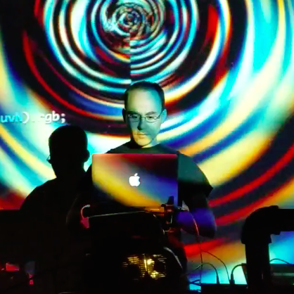

live-coding physics/audio
I keep learning more about emulating old-school synthesizers. The lesson is usually to keep it simple. Here's something nice for SuperDirt (thanks to Eric Fairbanks for inspiration):
SynthDef(\superpsaw, {|out, pan, freq, sustain|
var sound, mod, aenv, fenv;
aenv = EnvGen.ar(Env.linen(0.05, 0.9, 0.05, 1, 'lin'), timeScale:sustain, doneAction:2);
fenv = EnvGen.ar(Env.perc(0.1, 0.9, 1, -1), timeScale:sustain);
sound = Splay.arFill(4, {|n| VarSaw.ar(freq*(0.01*n+0.985), Rand(0,1), 0.01)}, 0.4);
sound = RLPF.ar(sound, freq*5*fenv, 1.5);
sound = sin(sound*2)/2;
OffsetOut.ar(out, DirtPan.ar(sound, ~dirt.numChannels, pan, aenv));
}).add;
Lately I've been working with some Raspberry Pi setups (I've been testing out a 3b and Zero W).
Next I'd like to connect some sensors and use them as live inputs.
Algorave 5th birthday celebratory livestream 2017 Mar 17 (00h-24h GMT)
Just released: Tidal 0.9 [main site] [hackage] [GitHub]
I've converted the vector art version of the AlgoRave spirangle to a few different formats:
Just a quick update of things I'm working on...
TidalCycles v0.8 has been released, and I'm pleased to have contributed to some of the great new stuff. Among other things, the main synthesis engine has shifted to the SuperCollider-hosted @SuperDirt, which allows Tidal to use realtime software synthesizers in addition to samples. I contributed some of the new software synths, and provided some tutorials to make it easy to get started adding your own. Some of them require the @SC3-plugins for SuperCollider, so go grab them as well.
There's a new Q&A forum over at ask.tidalcycles.org as well, so if you have any trouble getting started check it out!
 More content coming shortly...
I'll be playing April 15 at The Depot in Hopkins, MN, along with Kindohm and Blaerg, with visual artistry provided by ObiWanCodenobi
Some code you might hear:
d1
$ pingpong0 (1/8) (2/8) (165/240) (*** [gain "0.8", speed "1.5"])
$ every 3 (within (0.25,0.5) (ntrip $ 3/4))
$ every 2 (within (0.75,1) (necho $ 1/2))
$ (sound $ slow 128 $ step' ["bd", "sn:1", "hh"] $ take 1024 $ lindenmayer 30 "0:0-1-,1:22,2:-2--001-,-:-10-" "0")
### [crush "4", coarse "4", shape "0.99", gain "0.9"]
It's still a bit much for my everyday use, but I've really been enjoying @cool-retro-term. Using this with Tidal means using an editor inside a terminal, such as emacs or vi. I've been using vim with vim-slime in combination with tmux. Tmux lets me make multiple windows/panes, and the vim-slime combo lets me send code from the editor pane to the GHCi pane. A screenshot doesn't really do it justice, since it does screen glow, static, and other animated effects, but the end result looks like this:
I use and occasionally contribute to Tidal (@tidalcycles). I also use the Atom plugin to run things.
There are several options! Here I go from simpler to more advanced
I have a separate snippets.tidal file where I keep a bunch of macros that I find useful. If you come up with something really great, consider sharing it! Here's what mine currently looks like:
let (***) = foldl (|*|)
(+++) = foldl (|+|)
(###) = foldl (#)
outside n f p = slow n $ f (density n p)
every' n o f = when ((== o) . (`mod` n)) f
withArc (s,e) f p = stack [sliceArc (0,s) p, f $ sliceArc (s,e) p, sliceArc (e,1) p]
shiftArc (s,e) t = withArc (s,e) (t ~>)
beginend bpat durpat = (begin bpat) # (end $ (+) <$> bpat <*> durpat)
flange n t p = stack [ (toRational i*t) ~> p # begin (pure $ i/n) # end (pure $ (i+1)/n) | i <- [0..n-1] ]
sometimesBy' x f p = (1024 ~>) $ sometimesBy x f p
pingpongBy x t f p = stack [p, t ~> (f p # pan (pure $ (1-x)/2)), (3*t) ~> (f $ f p # pan (pure $ (x+1)/2))]
pingpong = pingpongBy 1
pingpongBy' x fb tL tR cps f p = stack [ p,
(tL ~> (f p)) # pan (pure $ (1-x)/2) |*| ddd,
((tL+tR) ~> (f p)) # pan (pure $ (x+1)/2) |*| ddd ]
where ddd = delay "1" |*| delaytime (pure $ fromRational $ (tL+tR)/cps) |*| delayfeedback (pure fb) |*| gain (pure fb)
pop op x y = op <$> x <*> y
padd = pop (+)
I just evaluate this whole thing and get all those functions for the remainder of my Tidal session.
For more sophisticated customizations that might need to pull from another library, you can try moving your definitions to a separate file that will be loaded at Tidal startup (either in Emacs or Atom). Notice there's some overlap with some of the stuff I defined above.
First a bunch of options and imports (not all of these are necessary at the moment)
{-# OPTIONS_GHC -XNoMonomorphismRestriction #-}
module TidalCustom where
import Control.Applicative
import Data.Monoid
import Data.Fixed
import Data.List
import Data.Maybe
import Data.Ratio
import Debug.Trace
import Data.Typeable
import Data.Function
import Data.String
import Music.Theory.Bjorklund
import Sound.Tidal.Dirt
import Sound.Tidal.Pattern
import Sound.Tidal.Stream
import Sound.Tidal.Strategies
import Sound.Tidal.Tempo
import Sound.Tidal.Time
import Sound.Tidal.Utils
import Data.Time (getCurrentTime, UTCTime, diffUTCTime)
import Data.Time.Clock.POSIX
import Control.Concurrent.MVar
import Control.Monad.Trans (liftIO)
Then I define some custom functions I use a lot
outside n f p = slow n $ f (density n p)
every' n o f = when ((== o) . (`mod` n)) f
slowspread' n f xs = slowspread f (concat $ map (replicate n) xs)
metallo :: Time -> [Int] -> [Double] -> (OscPattern -> OscPattern)
metallo i xs ys = slowspread (\x -> inside i (striate' (fst x) (snd x))) (zip xs ys)
choppedsaw1 :: Time -> Pattern Double
choppedsaw1 n = sig $ \t ->
let t1 = mod' (fromRational t) 1
sqr = (2 * floor (t1 * n)) - (floor (2*t1*n)) + 1
in (t1 - 1) * (fromIntegral sqr) + 1
withArc' :: Arc -> (Pattern a -> Pattern a) -> Pattern a -> Pattern a
withArc' (s,e) f p = stack [sliceArc (0,s) p,
f $ sliceArc (s,e) p,
sliceArc (e,1) p
]
shiftArc (s,e) t = withArc' (s,e) (t ~>)
It's really not too hard to develop Tidal itself. Create a fork and clone it to your computer. You can edit your startup script (BootTidal.hs in Atom) to load this installation instead of the one Cabal installed (see next section). Now you can edit Tidal's source files directly, reboot Tidal, and see the effects of what you did! It's probably polite to make a new branch for changes you make, then you can sync it and submit a pull request to have your changes brought back into the main version of Tidal.
I use an edited version of this file to set up easy interfaces to SuperCollider and this visualizer
First, I tell it to use a development version of Tidal (dev-0.7 at the moment) from GitHub rather than the Tidal version installed by Cabal
:cd ~/Documents/GitHub/Tidal2
:set prompt ""
:load Sound.Tidal.Context
Then there's the standard stuff to set up (d1,t1) through (d9,t9), after which I add the following to connect to SuperCollider (I'm assuming 0.7 branch of SuperDirt here)
(sd1, td1) <- superDirtSetters getNow
If you want hush to work with everything you need to add to its definition
let hush = mapM_ ($ silence) [d1,d2,d3,d4,d5,d6,d7,d8,d9,sd1]
Finally, to interface with the visualizer I insert
let splashState = Sound.Tidal.Context.state "127.0.0.1" 7772 dirt
let splashSetters getNow = do ss <- splashState ; return (setter ss, transition getNow ss)
(gl1,glt1) <- splashSetters getNow
(gl2,glt2) <- splashSetters getNow